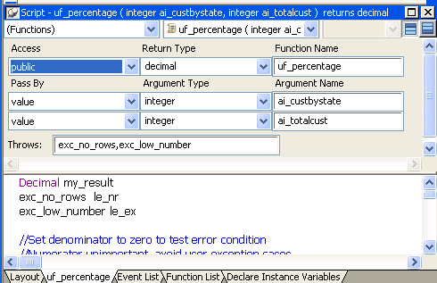

Although you define global functions in the Function painter and object-level functions in the painter for a specific object, in both cases you define and code the function in a Script view.
When you add a new function, a Prototype window displays above the script area in the Script view. The fields in the Prototype window are in the same order as the function's signature:

The following sections describe each of the steps required to define and code a new function:
How you create a new function depends on whether you are defining a global function or an object-level function.
 To create a new global function:
To create a new global function:
Select File>New from the menu bar and select Function from the PB Object tab.
The Function painter opens, displaying a Script view with an open Prototype window in which you define the function.
 To create a new object-level function:
To create a new object-level function:
Open the object for which you want to declare a function.
You can declare functions for windows, menus, user objects, or applications.
Select Insert>Function from the menu bar, or, in the Function List view, select Add from the pop-up menu.
The Prototype window opens in a Script view or, if no Script view is open, in a new Script view.
In the Prototype window, use the drop-down list labeled Access to specify where you can call the function in the application.
Global functions can always be called anywhere in the application. In PowerBuilder terms, they are public. When you are defining a global function, you cannot modify the access level; the field is read-only.
You can restrict access to an object-level function by setting its access level.
If a function is to be used only internally within an object, you should define its access as private or protected. This ensures that the function is never called inappropriately from outside the object. In object-oriented terms, defining a function as protected or private encapsulates the function within the object.
 Transaction server components If you are defining functions for a custom class user object
that you will use as an EAServer or
COM component, remember that only public functions can appear in
the interface for the component.
Transaction server components If you are defining functions for a custom class user object
that you will use as an EAServer or
COM component, remember that only public functions can appear in
the interface for the component.
Many functions perform some processing and then return a value. That value can be the result of the processing or a value that indicates whether the function executed successfully or not. To have your function return a value, you need to define its return type, which specifies the datatype of the returned value.
You must code a return statement in the function that specifies the value to return. See "Returning a value". When you call the function in a script or another function, you can use an assignment statement to assign the returned value to a variable in the calling script or function. You can also use the returned value directly in an expression in place of a variable of the same type.
 To define a function's return type:
To define a function's return type:
Select the return type from the Return Type drop-down list in the Prototype window, or type in the name of an object type you have defined.
You can specify any PowerBuilder datatype, including the standard datatypes, such as integer and string, as well as objects and controls, such as DataStore or MultiLineEdit.
You can also specify as the return type any object type that you have defined. For example, if you defined a window named w_calculator and want the function to process the window and return it, type w_calculator in the Return Type list. You cannot select w_calculator from the list, because the list shows only built-in datatypes.
 To specify that a function does not return a value:
To specify that a function does not return a value:
Select (None) from the Return Type list.
This tells PowerBuilder that the function does not return a value. This is similar to defining a procedure or a void function in some programming languages.
The following examples show the return type you would specify for some different functions:
Name the function in the Function Name box. Function names can have up to 40 characters. For valid characters, see the PowerScript Reference .
For object-level functions, the function is added to the Function List view when you tab off the Function Name box. It is saved as part of the object whenever you save the object.
Using a naming convention for user-defined functions makes them easy to recognize and distinguish from built-in PowerScript functions. A commonly used convention is to preface all global function names with f_ and object-level functions with of_, such as:
// global functions
f_calc
f_get_result
// object-level functions
of_refreshwindow
of_checkparent
Built-in functions do not usually have underscores in their names, so this convention makes it easy for you to identify functions as user defined.
Like built-in functions, user-defined functions can have any number of arguments, including none. You declare the arguments and their types when you define a function.
In user-defined functions, you can pass arguments by reference, by value, or read-only. You specify this for each argument in the Pass By list.
By reference When you pass an argument by reference, the function has access to the original argument and can change it directly.
By value When you pass by value, you are passing the function a temporary local copy of the argument. The function can alter the value of the local copy within the function, but the value of the argument is not changed in the calling script or function.
Read-only When you pass as read-only, the variable's value is available to the function but it is treated as a constant. Read-only provides a performance advantage over passing by value for string, blob, date, time, and datetime arguments, because it does not create a copy of the data.
 If the function takes no arguments Leave the initial argument shown in the Prototype window blank.
If the function takes no arguments Leave the initial argument shown in the Prototype window blank.
 To define arguments:
To define arguments:
Declare whether the first argument is passed by reference, by value, or read-only.
The order in which you specify arguments here is the order you use when calling the function.
Declare the argument's type. You can specify any datatype, including:
Name the argument.
If you want to add another argument, press the Tab key or select Add Parameter from the pop-up menu and repeat steps 1 to 3.
 Passing arrays You must include the square brackets in the array definition,
for example, price[ ] or price[50],
and the datatype of the array must be the datatype of the argument. For information
on arrays, see the PowerScript Reference
.
Passing arrays You must include the square brackets in the array definition,
for example, price[ ] or price[50],
and the datatype of the array must be the datatype of the argument. For information
on arrays, see the PowerScript Reference
.
If you are using user-defined exceptions, you must define what exceptions might be thrown from a user-defined function or event. You use the Throws box to do this.
Any developers who call the function or event need to know what exceptions can be thrown from it so that their code can handle the exceptions. If a function contains a THROW statement that is not surrounded by a try-catch block that can deal with that type of exception, then the function must be declared to throw that type of an exception or some ancestor of that exception type.
There are two exception types that inherit from the Throwable object: Exception and RuntimeError. Typically, you add objects that inherit from Exception to the THROWS clause of a function. Exception objects are the parents of all checked exceptions, which are exceptions that must be dealt with when thrown and declared when throwing. You do not need to add Runtime error objects to the THROWS clause, because they can occur at any time. You can catch these errors in a try-catch block, but you are not required to.
You can add a THROWS clause to any PowerBuilder function or to any user event that is not defined by an event ID. To do so, drag and drop it from the System Tree, or type the name of the object in the box. If you type the names of multiple user objects in the Throws box, use a comma to separate the object names. When you drag and drop multiple user objects, PowerBuilder automatically adds the comma separators.
The PowerBuilder compiler checks whether a user-defined exception thrown on a function call in a script matches an exception in the THROWS clause for that function. It prompts you if there is no matching exception in the THROWS clause.
You can define a user-defined exception object, and inherit from it to define more specific lower-level exceptions. If you add a high-level exception to the throws clause, you can throw any lower-level exception in the script, but you risk hiding any useful information obtainable from the lower-level exception.
For more information about exception handling, see Application Techniques .
When you have finished defining the function prototype, you specify the code for the function just as you specify the script for an event in the Script view. For information about using the Script view, see Chapter 7, "Writing Scripts ."
User-defined functions can include PowerScript statements, embedded SQL statements, and calls to built-in, user-defined, and external functions.
You can type the statements in the Script view or use the buttons in the PainterBar or items on the Edit>Paste Special menu to insert them into the function. For more information, see "Pasting information into scripts".
If you specified a return type for your function in the Prototype window, you must return a value in the body of the function. To return a value in a function, use the RETURN statement:
RETURN expression
where expression is the value you want returned by the function. The datatype of the expression must be the datatype you specified for the return value for the function.
The following function returns the result of dividing arg1 by arg2 if arg2 does not equal zero. It returns –1 if arg2 equals zero:
IF arg2 <> 0 THEN
RETURN arg1 / arg2
ELSE
RETURN -1
END IF
When you finish building a function, compile it and save it in a library. Then you can use it in scripts or other user-defined functions in any application that includes the library containing the function in its library search path. You compile the script and handle errors as described in "Compiling the script ".